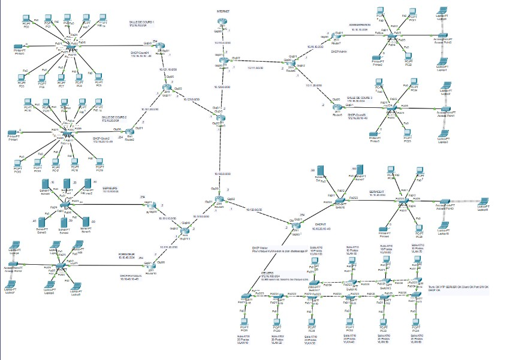
Projet Réseau CAMPUS - Réseaux
Le projet Réseau Campus a pour but de mettre à contribution nos compétences réseaux pour un Technicien support de Niveau 2 en étude de BTS SIO option SISR. Ce projet est réalisé sur Cisco Packet Tracer.
Focus sur mes réalisations majeures et mon catalogue de documentations techniques.

Le projet Réseau Campus a pour but de mettre à contribution nos compétences réseaux pour un Technicien support de Niveau 2 en étude de BTS SIO option SISR. Ce projet est réalisé sur Cisco Packet Tracer.
Mise en place d’une architecture de diffusion vidéo en temps réel à partir d’une caméra IP Axis. Centralisation du flux via MediaMTX, traitement vidéo avec Python (OpenCV) et ajout d’un overlay dynamique avant redistribution du flux.
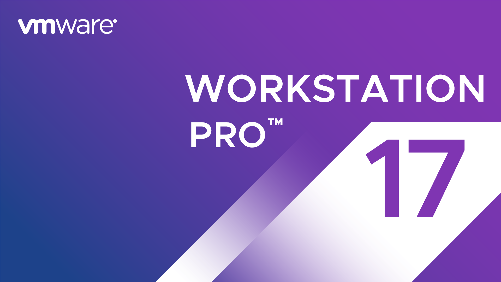
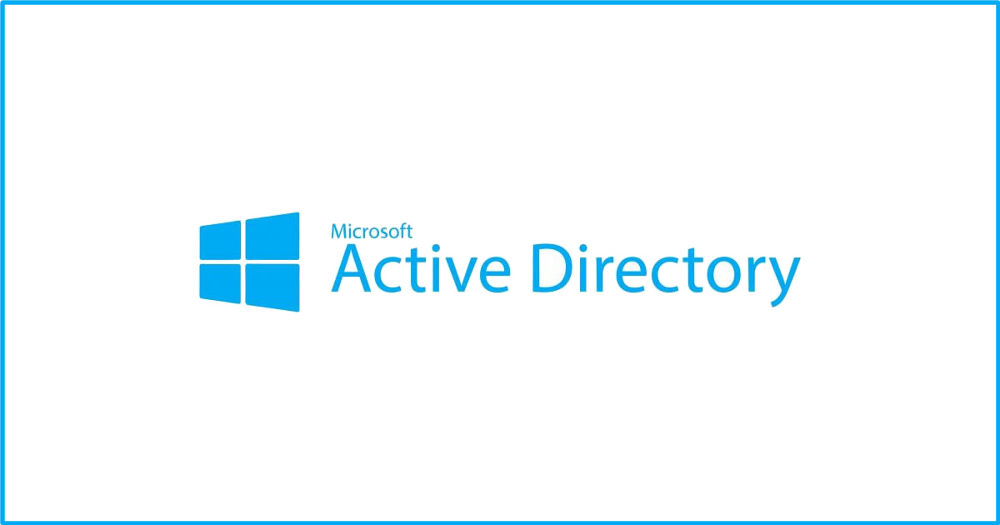
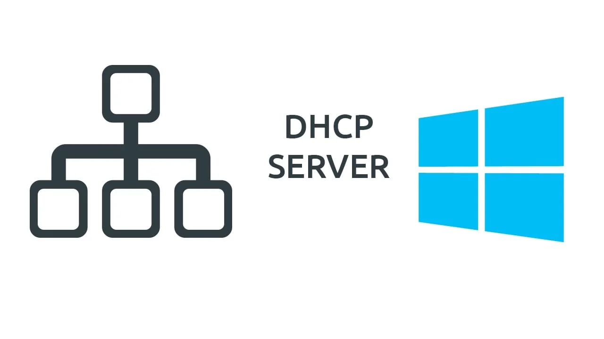
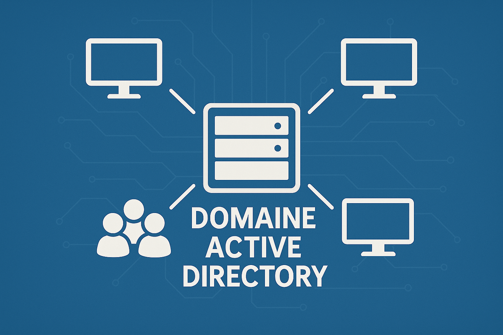

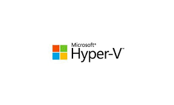

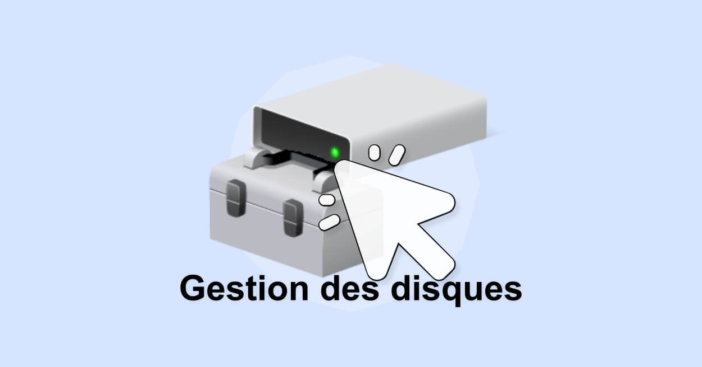
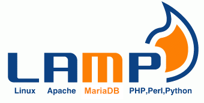

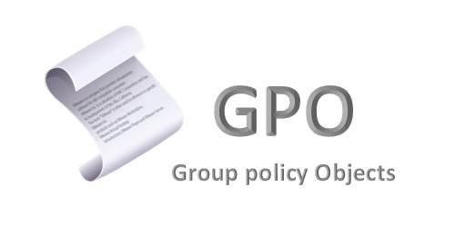
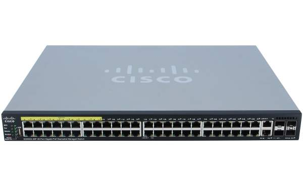
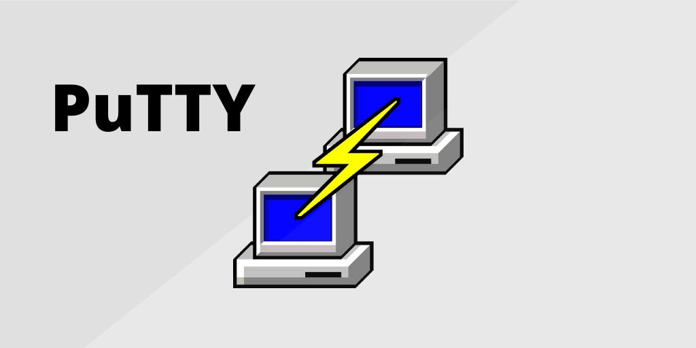
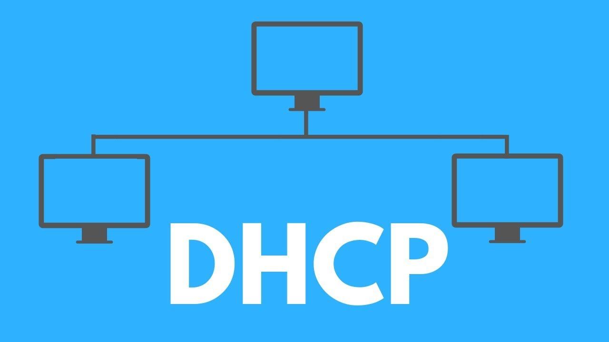
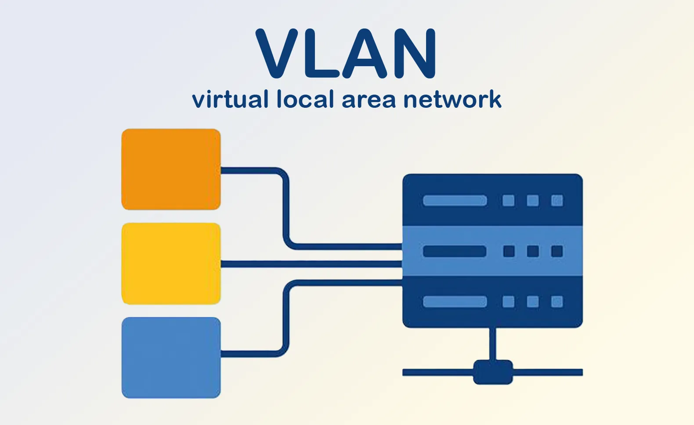
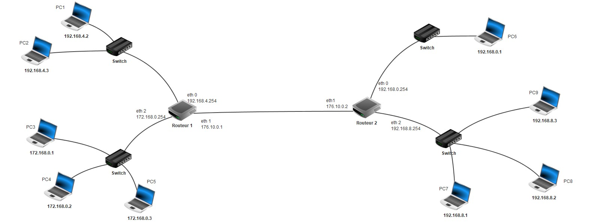
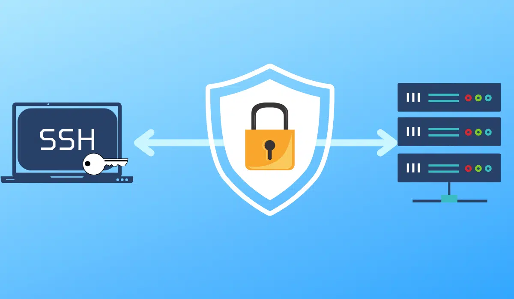